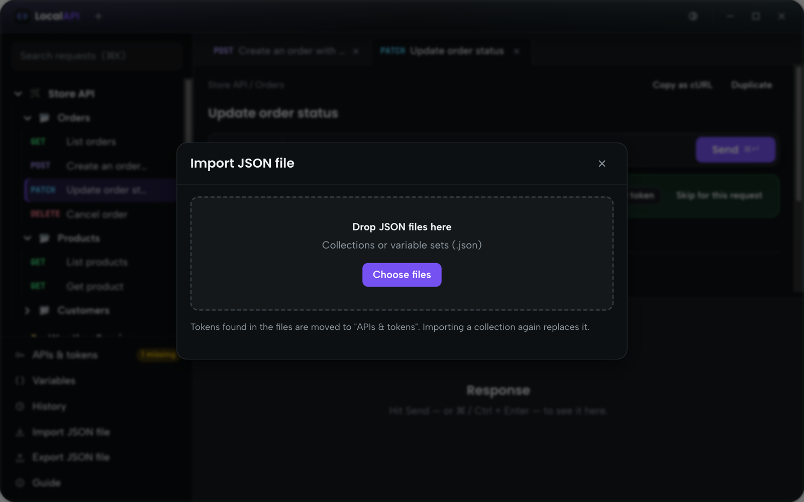
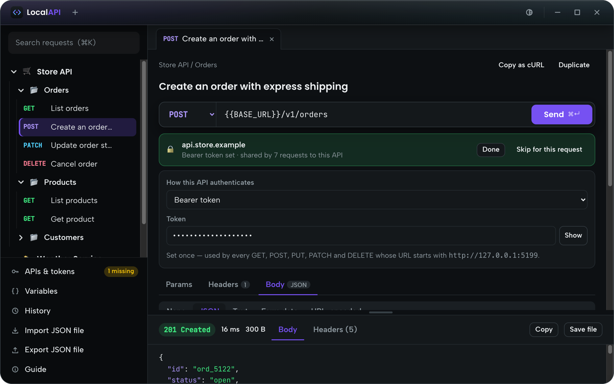
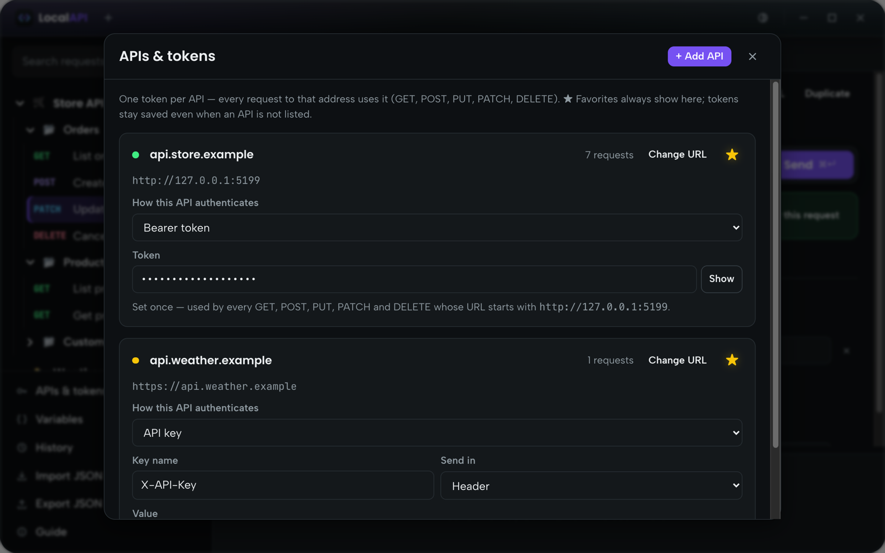
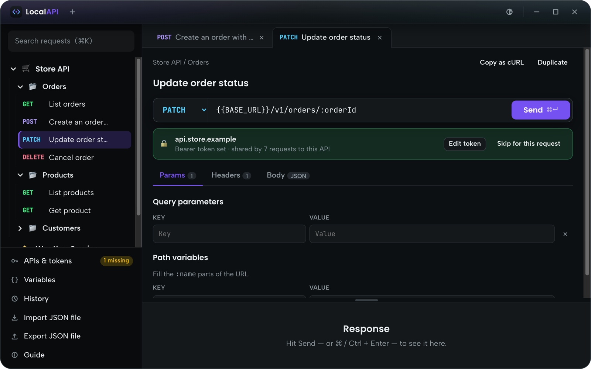
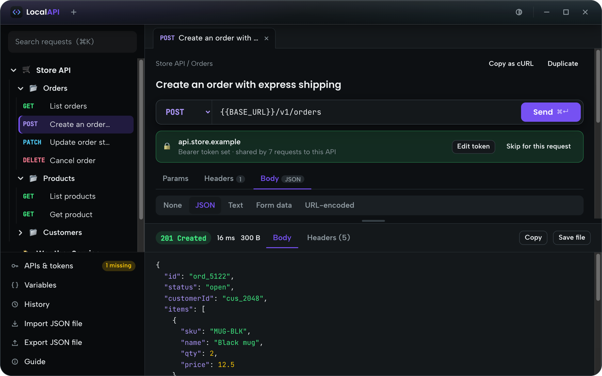
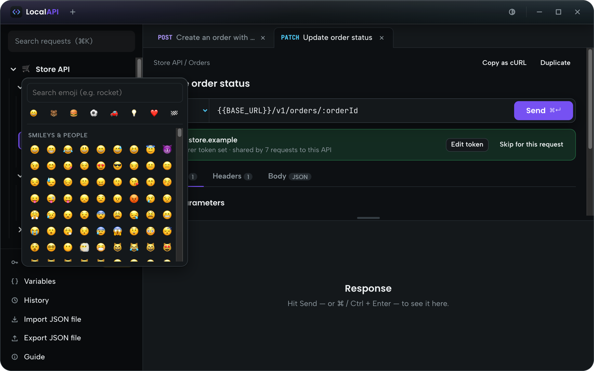
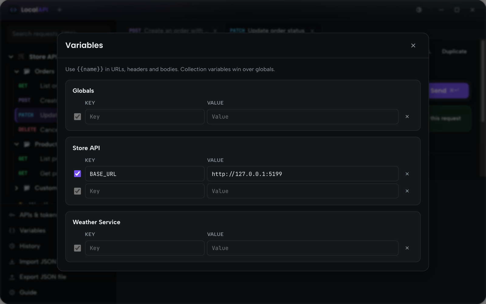
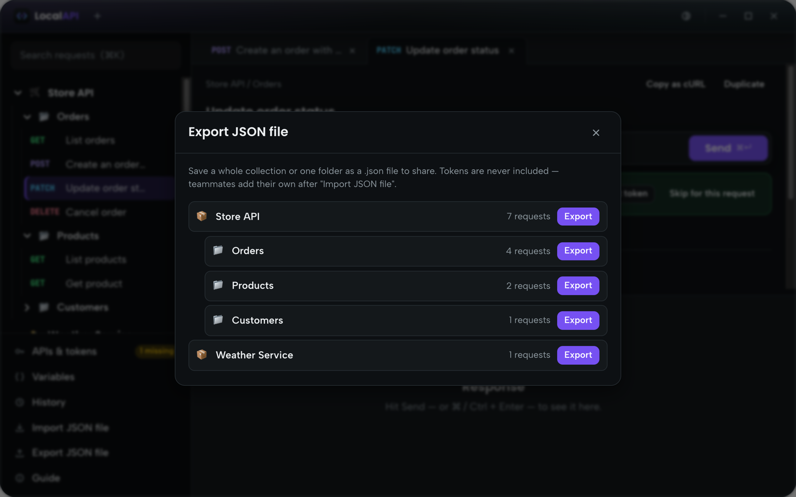
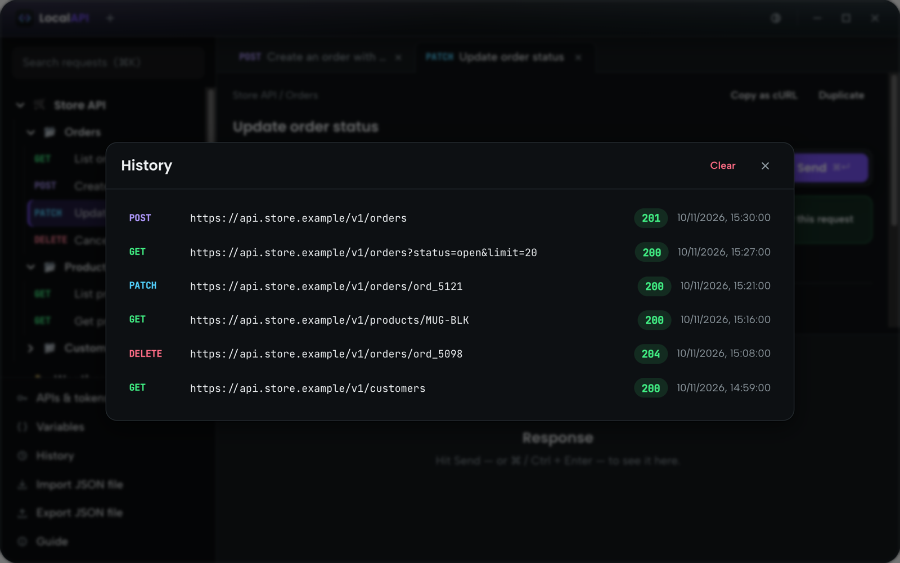
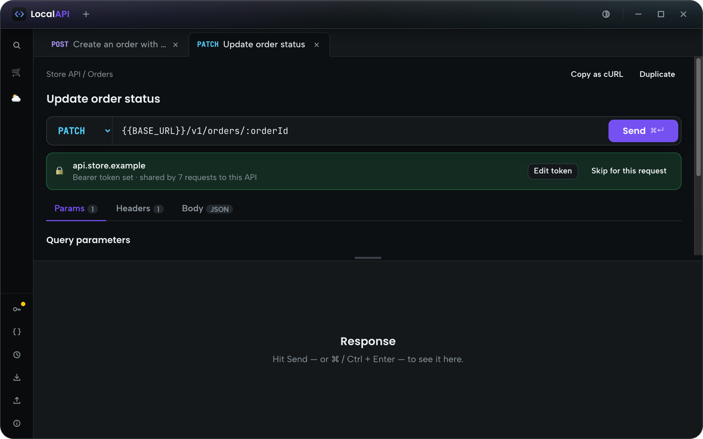

The guide
Everything you need, step by step. The same guide is inside the app: click Guide at the bottom of the menu.
What LocalAPI is
LocalAPI is a simple client for calling APIs, like Postman, that runs and saves everything on your own Mac. No account, no cloud.
- Your collections, tokens and history stay in
~/Library/Application Support/LocalAPI/data. - Requests go straight from your Mac to the API.
- Changes save automatically: there is no Save button.
Import a collection
- Click Import JSON file at the bottom of the menu.
- Drop the .json file a teammate shared with you, or a Postman collection (v2.1) or environment export.
- Folders, requests, headers and bodies come in ready to use.
Importing a collection with the same name again replaces it. Your tokens are kept.

Add your tokens (once per API)
A token belongs to an API address (like https://api.example.com), not to a single request. Add it once and every GET, POST, PUT, PATCH and DELETE to that address uses it.
- Open a request: the bar under the URL shows the API and whether it has a token.
- Click Add token and paste it. "Bearer " in front is fine, it is removed for you.
- Or open APIs & tokens in the menu to manage all of them.
- ★ Favorites always show in APIs & tokens. Click the star to add or remove an API from the list; its token stays saved.
- + Add API picks another API from your collections, or any address.
- Besides bearer tokens you can use an API key (header or query), username & password, or a custom Authorization header.
- Skip for this request sends one request without the token.


Send a request
- Pick a request in the menu, or create one with ⋯ › New request on a collection or folder.
- Choose the method and edit the URL.
- Params: query parameters and path variables (the
:idparts of the URL). - Headers: extra headers. Authorization comes from your token automatically.
- Body: JSON (starts with
{ }, with Beautify), text, form data with files, or URL-encoded. - Press Send or ⌘ Enter.
A red note under the URL means something needs fixing first, like an empty path variable.

Read the response
- Status, time and size are shown on top.
- JSON is formatted and colored; PDFs and images preview right there.
- Headers shows the response headers.
- Copy copies the body; Save file downloads it (for example a generated PDF).
- Drag the small bar between the request and the response to resize them.

Organize collections
- + in the header creates a new collection.
- ⋯ next to a collection, folder or request: new request, new folder, rename, duplicate, delete, export.
- Click a collection's icon (📦) to choose any emoji for it.
- Search all requests with ⌘ K. Hover a cut-off name to see it in full.
- Open requests become tabs; with many tabs use the ‹ › arrows.
- Duplicate and Copy as cURL are at the top of every request.

Variables
Write {{name}} in a URL, header or body and LocalAPI fills in the value when sending.
- Open Variables in the menu to edit them.
- Collection variables belong to one collection and win over globals, which apply everywhere.
- Unknown variables are flagged in red under the URL.

Share with your team
- Click Export JSON file and pick the collection (or one folder).
- Send the file to your teammates.
- They use Import JSON file and add their own tokens.
Exports never contain tokens, and variables named like secrets are left empty. The collection icon and the favorite APIs are included.

History
History lists the last 200 requests you sent with their status and time. Click one to open that request again.

Window, menu and theme
- Drag the window by an empty part of the header; double-click it to maximize.
- Everything scales with the window size: make it as big or small as you like.
- Hover the line between the menu and the page to show the ⇄ button: it switches the menu between icons + text and icons only.
- ◐ in the header switches between dark and light.

Your data and privacy
- Nothing is sent anywhere except the requests you make.
- To back up, copy
~/Library/Application Support/LocalAPI/data. To reset the app, delete that folder. apis.jsonin that folder holds your tokens: never share it.